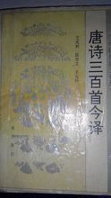

唐诗三百首内容简介
编辑《唐诗三百首》共选入唐代诗人77位，计311首诗，其中五言古诗33首，乐府46首，七言古诗28首，七言律诗50首，五言绝句29首，七言绝句51首，诸诗配有注释和评点。 五言古诗简称五古，是唐代诗坛较为流行的体裁。唐人五古笔力豪纵，气象万千，直接用于叙事、抒情、议论、写景，使其功能得到了空前的发挥，其代表作家李白、杜甫、王维、孟浩然、韦应物等。 七言古诗简称七古，起源于战国时期，甚至更早。
 清·同治辛末春刊《唐诗注疏三百首》
清·同治辛末春刊《唐诗注疏三百首》
唐诗三百首成品目录
编辑感遇·孤鸿海上来(张九龄)
感遇·兰叶春葳蕤(张九龄)
清平调·一枝红艳露凝香(李白)
长相思·在长安(李白)
子夜吴歌·夏歌(李白)
子夜吴歌·秋歌(李白)
子夜吴歌·冬歌(李白)
游子吟(孟郊)
塞下曲·林暗草惊风(卢纶)
塞下曲·月黑雁飞高(卢纶)
听筝(李端)
渡汉江(李频)
八阵图(杜甫)
宿建德江(孟浩然)
春晓(孟浩然)
春怨(金昌绪)
江雪(柳宗元)
秋夜寄邱员外(韦应物)
终南望余雪(祖咏)
宫词(张祜)
寻隐者不遇(贾岛)
送崔九(裴迪)
送灵澈(刘长卿)
听弹琴(刘长卿)
送上人(刘长卿)
玉台体(权德舆)
芙蓉楼送辛渐(王昌龄)
闺怨(王昌龄)
春宫曲(王昌龄)
九月九日忆山东兄弟(王维)
凉州词(王翰)
后宫词(白居易)
宫中词(朱庆馀)
近试上张水部(朱庆馀)
逢入京使(岑参)
黄鹤楼送孟浩然之广陵(李白)
早发白帝城(李白)
夜上受降城闻笛(李益)
贾生(李商隐)
隋宫(李商隐)
瑶池(李商隐)
嫦娥(李商隐)
夜雨寄北(李商隐)
寄令狐郎中(李商隐)
为有(李商隐)
江南逢李龟年(杜甫)
赠别二首·其一(杜牧)
赠别二首·其二(杜牧)
金谷园(杜牧)
寄扬州韩绰判官(杜牧)
遣怀(杜牧)
秋夕(杜牧)
将赴吴兴登乐游原一绝(杜牧)
赤壁(杜牧)
泊秦淮(杜牧)
征人怨(柳中庸)
金陵图(韦庄)
滁州西涧(韦应物)
桃花溪(张旭)
寄人(张泌)
题金陵渡(张祜)
赠内人(张祜)
集灵台二首·其一(张祜)
集灵台二首·其二(张祜)
枫桥夜泊(张继)
陇西行(陈陶)
杂诗(佚名)
回乡偶书(贺知章)
瑶瑟怨(温庭筠)
月夜(刘方平)
春怨(刘方平)
乌衣巷(刘禹锡)
春词(刘禹锡)
马嵬坡(郑畋)
寒食(韩翃)
已凉(韩偓)
宫词(顾况)
送杜少府之任蜀州(王勃)
送梓州李使君(王维)
汉江临眺(王维)
终南别业(王维)
终南山(王维)
酬张少府(王维)
过香积寺(王维)
辋川闲居赠裴秀才迪(王维)
山居秋暝(王维)
归嵩山作(王维)
次北固山下(王湾)
云阳馆与韩绅宿别(司空曙)
喜外弟卢纶见宿(司空曙)
贼平后送人北归(司空曙)
赋得古原草送别(白居易)
题大庾岭北驿(宋之问)
寄左省杜拾遗(岑参)
听蜀僧浚弹琴(李白)
夜泊牛渚怀古(李白)
赠孟浩然(李白)
渡荆门送别(李白)
送友人(李白)
喜见外弟又言别(李益)
凉思(李商隐)
北青萝(李商隐)
蝉(李商隐)
风雨(李商隐)
落花(李商隐)
登岳阳楼(杜甫)
奉济驿重送严公四韵(杜甫)
别房太尉墓(杜甫)
旅夜书怀(杜甫)
至德二载甫自京金光门(杜甫)
月夜忆舍弟(杜甫)
天末怀李白(杜甫)
月夜(杜甫)
春望(杜甫)
春宿左省(杜甫)
旅宿(杜牧)
春宫怨(杜荀鹤)
和晋陵陆丞早春游望(杜审言)
杂诗(沈佺期)
宿桐庐江寄广陵旧游(孟浩然)
留别王维(孟浩然)
早寒有怀(孟浩然)
岁暮归南山(孟浩然)
过故人庄(孟浩然)
秦中寄远上人(孟浩然)
望洞庭湖赠张丞相(孟浩然)
与诸子登岘山(孟浩然)
宴梅道士山房(孟浩然)
章台夜思(韦庄)
淮上喜会梁州故人(韦应物)
赋得暮雨送李曹(韦应物)
经邹鲁祭孔子而叹之(唐玄宗)
灞上秋居(马戴)
楚江怀古(马戴)
除夜有怀(崔涂)
孤雁(崔涂)
题破山寺后禅院(常建)
望月怀远(张九龄)
书边事(张乔)
没蕃故人(张籍)
秋日赴阙题潼关驿楼(许浑)
早秋(许浑)
送人东游(温庭筠)
寻陆鸿渐不遇(僧皎然)
寻南溪常道士(刘长卿)
新年作(刘长卿)
秋日登吴公台上寺远眺(刘长卿)
送李中丞归汉阳别业(刘长卿)
饯别王十一南游(刘长卿)
蜀先主庙(刘禹锡)
阙题(刘昚虚)
送李端(卢纶)
送僧归日本(钱起)
谷口书斋寄杨补阙(钱起)
在狱咏蝉(骆宾王)
江乡故人偶集客舍(戴叔伦)
酬程延秋夜即事见赠(韩翃)
遣悲怀三首·其一(元稹)
遣悲怀三首·其二(元稹)
遣悲怀三首·其三(元稹)
赠郭给事(王维)
和贾至舍人早朝大明宫之作(王维)
奉和圣制从蓬莱向兴庆阁道中(王维)
积雨辋川庄作(王维)
望月有感(白居易)
奉和中书舍人贾至早朝大明宫(岑参)
登金陵凤凰台(李白)
无题·重帏深下莫愁堂(李商隐)
无题·相见时难别亦难(李商隐)
无题·凤尾香罗薄几重(李商隐)
无题·来是空言去绝踪(李商隐)
无题·飒飒东风细雨来(李商隐)
春雨(李商隐)
筹笔驿(李商隐)
锦瑟(李商隐)
无题·昨夜星辰昨夜风(李商隐)
隋宫(李商隐)
送魏万之京(李颀)
咏怀古迹·其一(杜甫)
咏怀古迹·其二(杜甫)
咏怀古迹·其三(杜甫)
咏怀古迹·其四(杜甫)
咏怀古迹·其五(杜甫)
宿府(杜甫)
阁夜(杜甫)
闻官军收河南河北(杜甫)
登高(杜甫)
登楼(杜甫)
蜀相(杜甫)
客至(杜甫)
野望(杜甫)
登柳州城楼寄漳汀封连四州(柳宗元)
春思(皇甫冉)
寄李儋元锡(韦应物)
望蓟门(祖咏)
贫女(秦韬玉)
送李少府贬峡中王少府贬长沙(高适)
九日登望仙台呈刘明府(崔曙)
黄鹤楼(崔颢)
行经华阴(崔颢)
利州南渡(温庭筠)
苏武庙(温庭筠)
江州重别薛六柳八二员外(刘长卿)
长沙过贾谊宅(刘长卿)
自夏口至鹦鹉洲夕望岳阳寄源中丞(刘长卿)
西塞山怀古(刘禹锡)
晚次鄂州(卢纶)
赠阙下裴舍人(钱起)
同题仙游观(韩翃)
唐诗三百首创作背景
编辑清代康熙年间编订的《全唐诗》，收录诗四万八千九百多首，常人难以全读；此后 沈德潜以《全唐诗》为蓝本，编选《唐诗别裁》，收录诗一千九百二十八首，普通人也难以全读。于是，清代乾隆年间蘅塘退士以《唐诗别裁》为蓝本，编选《唐诗三百首》收录诗三百一十首，成为流传最广、影响最大的唐诗普及读本。

唐诗三百首（三秦出版社出版·1995年）(3张)
唐诗三百首后世影响
编辑中国是诗的国度，唐朝是中国诗歌的巅峰，巅峰时期的那个黄金时代令人神往。
 诗歌是当时文学的最高代表，成为中国传统文学坚实的重要组成部分，也是中华文明靓丽的风景线。 唐诗与宋词、元曲并称，题材宽泛，众体兼备，格调高雅，是中国诗歌发展史上的奇迹。唐诗对中国文学的影响极为深远。历朝历代的文人视唐诗为圭臬，奉唐人为典范。公元7世纪，孙季良开始编纂唐诗选本，至辛亥革命前，一千二百余年间，每二年即有一本唐诗选本问世。众多选本中以《唐诗三百首》流传最广、影响最大，风行海内，老幼皆宜，雅俗共赏，成为屡印不止的最经典的选本之一。《唐诗三百首》以成功务实的编法、简易适中的篇幅、通俗大众的观点、入选的精美诗歌打动着读者，成为儿童最成功的启蒙教材、了解中国文化的模范读本，对中国诗歌选编学、中国人的心理构成都有很大的影响。
诗歌是当时文学的最高代表，成为中国传统文学坚实的重要组成部分，也是中华文明靓丽的风景线。 唐诗与宋词、元曲并称，题材宽泛，众体兼备，格调高雅，是中国诗歌发展史上的奇迹。唐诗对中国文学的影响极为深远。历朝历代的文人视唐诗为圭臬，奉唐人为典范。公元7世纪，孙季良开始编纂唐诗选本，至辛亥革命前，一千二百余年间，每二年即有一本唐诗选本问世。众多选本中以《唐诗三百首》流传最广、影响最大，风行海内，老幼皆宜，雅俗共赏，成为屡印不止的最经典的选本之一。《唐诗三百首》以成功务实的编法、简易适中的篇幅、通俗大众的观点、入选的精美诗歌打动着读者，成为儿童最成功的启蒙教材、了解中国文化的模范读本，对中国诗歌选编学、中国人的心理构成都有很大的影响。

唐诗三百首流行注本
编辑在古代的唐诗选本中，清人孙洙的《唐诗三百首》最为流行。今人喻守真有《唐诗三百首详析》中华书局版，对艺术特色的讲解甚为详切。今人唐诗选本较多，兹介绍两种：一是葛兆光《唐诗卷》浙江文艺出版社出版，收唐诗282首，凡七十八家，选诗颇具眼量，小传、注释新见迭出，自成一家；一是马茂元《唐诗选》人民文学出版社出版，选诗500余首，按体例排列，注释简明，分析详备。
诗集诗人列表
白居易、岑参、常建、陈陶、陈子昂、崔颢、崔曙、崔涂、戴叔伦、杜甫、杜牧、杜审言、杜荀鹤、高适、顾况、韩翃、韩偓、韩愈、贺知章、皇甫冉、贾岛、金昌绪、李白、李端、李频、李颀、李商隐、李益、刘长卿、刘方平、刘昚虚、刘禹锡、柳中庸、柳宗元、卢纶、骆宾王、马戴、孟浩然、孟郊、裴迪、綦毋潜、钱起、秦韬玉、丘为、权德舆、僧皎然、沈佺期、司空曙、宋之问、李隆基(唐玄宗)、王勃、王昌龄、王翰、王建、王湾、王维、王之涣、韦应物、韦庄、温庭筠、无名氏、西鄙人、许浑、薛逢、元结、佚名、元稹、张祜、张籍、张继、张九龄、张泌、张乔、张旭、郑畋、朱庆馀、祖咏
收录了77家诗，共311首，在数量以杜甫诗数多，有38首、王维诗29首、李白诗27首、李商隐诗22首。
词条图册
更多图册
- 参考资料
-
- 1. 同从弟南斋玩月忆山阴崔少府 ．百度百科．2015-07-08[引用日期2015-08-12]
- 2. 走马川行奉送封大夫出师西征 ．百度．2015-06-11[引用日期2015-08-14]
- 3. 轮台歌奉送封大夫出师西征 ．百度．2015-07-03[引用日期2015-08-14]
- 4. 听董大弹胡笳声兼寄语弄房给事 ．百度．2015-05-27[引用日期2015-08-14]
- 5. 观公孙大娘弟子舞剑器行 ． 百度．2015-06-11[引用日期2015-08-14]
- 6. 孙洙．唐诗三百首：中华书局，2001：前言1-6页
词条标签：